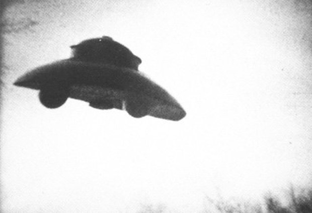
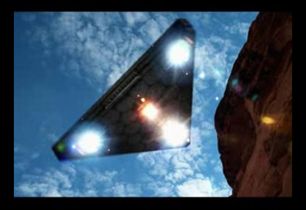
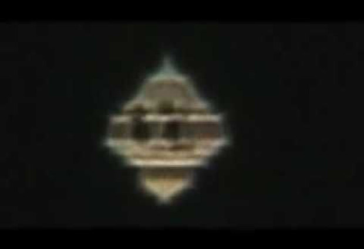

Llamado así porque quien lo dio a conocer fue el contactado polaco George Adamski. A diferencia de
otros ovnis más “difusos” éste presenta ventanillas en forma de “ojo de buey” y tres bolas en su
base que, según Adamski, formaban parte de su sistema de propulsión. No obstante, muy pocos le
creen, pues varios ufólogos piensan que él mismo “construyó el ovni” fotografiado.

Ovni Pleyadiano
Fue fotografiado por primera vez en 1975 en Suiza por el contactado Eduard Meier. Según su relato,
este tipo de ovni pertenece a la supuesta civilización humana proveniente de Las Pléyades (ver más
sobre ellos acá). Al igual que el anterior, sus fotos fueron cuestionadas por su claridad,
presentándose la tesis de un montaje a partir de una maqueta, como lo más factible. En la imagen de
abajo, vemos a la pleyadiana que bajó desde una nave para encontrarse con Meier.
Ovni Cigarro
Es un tipo de nave cilíndrica y alargada, de al menos varios metros de longitud. Algunas de su clase
llegan a alcanzar kilómetros de extensión, por lo que se les considera “nodrizas” (naves madres),
pues pueden albergar otras en su interior. Según el investigador conspiracionista español, Luis
Carlos Campos, pertenecerían a la raza extraterrestre reptiliana (Ver video aquí). Hace poco se han
visto ejemplares entrando y saliendo del volcán mexicano Popocatepetl.
Ovni Triangular
La primera ocasión en que fue observada se produjo durante la oleada ovni de 1989-1990 sobre
Bélgica. Objetos de parecidos fueron también vistos en España en 1996 y 1997 y, últimamente, sobre
la ciudad de Tucson, Estados Unidos (2010). Algunos expertos creen que en realidad se trata de
aviones espías de última generación de la serie “Stealth” F-117 A.

Ovni Panal
Es un objeto con forma de panal de abejas que casi siempre va dejando, tras de sí, una estela
luminosa en dirección opuesta a su rumbo de vuelo. Una de sus últimas apariciones se produjo en
agosto de 2010 en la localidad argentina
Ovni piramidal
Es un clase de ovni que se ha vuelto popular en los últimos años. Son en realidad estructuras
piramidales dobles que generalmente se mueven en torno a su propio eje. Estuvieron de moda sobre
todo entre los años 2010 y 2011 con avistamientos en Rusia, China, Taiwán, Corea del Sur, México e
Inglaterra. Sin embargo, en todos ellos se repiten las “grabaciones perfectas”, sin movimientos
apresurados ni exclamaciones de los testigos, lo cual hace dudar a varios ufólogos sobre la
veracidad de los videos.

Ovni Socorro
Fue un caso emblemático producido el 24 de abril de 1964 en la localidad mexicana de Socorro. Un
policía que perseguía a un vehículo por exceso de velocidad, divisó el aterrizaje de un objeto
extraño con base de trípode. Su relato, en el que afirmaba haber visto descender de la nave a dos
seres pequeños, fue investigado por el Proyecto Libro Azul el cual, también realizó un análisis de
las huellas dejadas por el objeto. Todo mantenido bajo la más estricta reserva hasta que muchos años
después se filtró la crónica.
Ovni Campana
Si bien hay muy pocos avistamientos de este tipo de ovnis en el mundo (más que nada en Australia y
Nueva Guinea), su salto a la fama se produjo gracias a la teoría conspirativa que afirma que los
nazis construyeron sus propias naves espaciales. Según algunos investigadores, el primer prototipo
no fue un platillo volador, sino que tenía la forma de una campana y los vuelos de prueba se habrían
realizado en Polonia.
Ebani
Es una abreviatura de: Entidades Biológicas Aéreas No identificadas, pues se asemejan a enormes
gusanos voladores. Sus principales apariciones se han dado en México, país donde existen numerosos
registros audiovisuales de ellos. En varias ocasiones se han visto pequeñas esferas emerger de ellos
lo cual aumenta el misterio… Pese a esto, los escépticos sostienen que sólo se trata de globos
alargados que parecen adquirir vida propia producto de las corrientes de aire.
Foo Fighters
Su nombre procede de una degeneración de la palabra francesa “feu” (fuego) y la inglesa “fighter”
(caza) y se traduce como “caza de fuego”. Se dieron a conocer durante los bombardeos aliados sobre
la Alemania nazi. De acuerdo a lo que comentaron los pilotos participantes de las batallas aéreas,
objetos esféricos y lumínicos de no más de 1 metro de diámetro, los persiguieron muy de cerca en
medio de los combates. Ha sido tal la popularidad de esta historia, que una banda estadounidense
adoptó ese nombre.